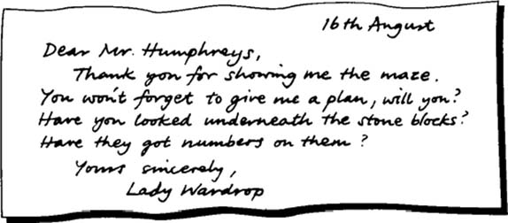

MÊ CUNG
Listen to Part 1:
Ông Wilson là một người rất giàu có nhưng không có con. Khi ông qua đời, ông để lại ngôi nhà và tiền bạc của mình cho cháu trai, ông Humphreys. Ông Humphreys rất ngạc nhiên vì ông chưa từng gặp người chú của mình, ông Wilson.
Ông Humphreys từ bỏ công việc ở một văn phòng. Ông đến sống trong ngôi nhà mới của mình ở vùng quê.
Ông Humphreys được ông Cooper đưa đi tham quan quanh ngôi nhà. Ông Cooper là quản lý khu điền trang. Công việc của ông là chăm sóc ngôi nhà và khu vườn.
‘Ngôi nhà thật đẹp, ông Humphreys ạ,’ Cooper nói. ‘Tất cả chúng tôi đều hy vọng ông sẽ rất vui vẻ ở đây. Khu vườn thật đẹp. Tôi hy vọng ông thích khu vườn, ông Humphreys ạ?’
‘Vâng, tôi thích,’ Humphreys nói, ‘rất thích.’
‘Ông nội của ông Wilson đã bắt đầu xây dựng khu vườn này vào năm 1780,’ Cooper nói. ‘Người đàn ông lớn tuổi đó đã đến Ý và trở về với một vài ý tưởng kỳ lạ.’
Humphreys nhìn ra phía khu vườn.
‘Tôi thấy có một ngôi đền La Mã,’ ông nói.
‘Vâng, thưa ông, có một ngôi đền,’ Cooper nói. ‘Chúng ta đến đó xem thử được chứ?’
Hai người đàn ông đi qua khu vườn rộng lớn và đẹp. Có nhiều con đường với những hàng cây và bụi cây ở hai bên. Ngôi đền La Mã nằm trên đỉnh một ngọn đồi nhỏ. Có một đống các khối đá bên trong ngôi đền.
Listen to Part 2:
‘Những khối đá này để làm gì vậy?’ Humphreys hỏi.
‘Tôi không biết, thưa ông,’ Cooper nói. ‘Chúng được lấy ra khỏi mê cung.’
‘Mê cung?’ Humphreys nói. ‘Tôi không biết là có một mê cung trong khu vườn này. Có phải ông Wilson đã làm ra nó không?’
‘Không phải ông ấy, thưa ông,’ Cooper nói. ‘Ông nội của ông Wilson đã trồng những hàng cây để tạo thành mê cung. Ông Wilson không bao giờ vào đó. Ông ấy cũng không cho bất kỳ ai vào đó. Hai mươi năm trước, ông Wilson đã ra lệnh mang những hòn đá này ra khỏi mê cung. Sau đó, cánh cổng vào mê cung đã bị khóa. Chưa có ai vào đó kể từ đó.’
Ông Humphreys nhìn những khối đá. Mỗi khối đều có một chữ cái được khắc vào.
‘Thú vị thật,’ ông nói. ‘Tôi muốn xem mê cung này.’
‘Nó ở đằng kia, thưa ông,’ Cooper nói, chỉ vào một khu rừng nhỏ. ‘Có một bức tường bao quanh nó và cánh cổng đã bị khóa. Tôi sẽ về nhà lấy chìa khóa.’
Cooper quay trở lại nhà. Humphreys đi bộ đến khu rừng nhỏ. Ông tìm thấy một bức tường có một cánh cổng.
Cánh cổng đã bị khóa bằng một ổ khóa cũ. Phía trên cánh cổng có dòng chữ tiếng Latinh viết bằng chữ in hoa – SECRETUM MEUM MIHI ET FILIIS DOMUS MEAE.
‘Để tôi xem nào,’ Humphreys nói. ‘Có nghĩa là như thế này – "Bí mật này là của tôi và con cháu đời sau của tôi". Tôi là một người con của gia đình này. Bí mật này cũng là của tôi!’
Listen to Part 3:
Ông đá vào ổ khóa cũ. Nó vỡ tung và rơi xuống đất. Ông mở cánh cổng và bước vào mê cung.
Một con đường tối dẫn vào mê cung. Bên trong, những con đường chạy giữa những hàng cây thông cao rậm rạp.
Rất khó để đi trên những con đường. Cành của những cái cây đã mọc ngang qua các con đường. Chúng gần như chặn hết đường đi. Humphreys là người đầu tiên đi vào mê cung trong hai mươi năm.
Ông đi đến trung tâm của mê cung mà không bị lạc.
Việc này dễ quá, ông tự nhủ. Mê cung là một câu đố. Mọi người luôn bị lạc trong mê cung.
Một cột đá đứng ở trung tâm của mê cung. Nó cao khoảng bốn feet. Trên đỉnh cột có một quả cầu bằng kim loại. Có những bức vẽ và chữ viết trên quả cầu.

Một cột đá đứng ở trung tâm của mê cung.
Trời tối và nóng trong mê cung. Không có gió. Có một sự im lặng lạ lùng. Humphreys nhận thấy tiếng chim đã ngừng hót.
Ông quay người để đi. Rồi ông nghe thấy có tiếng gì đó chuyển động trong mê cung phía sau mình. Ông quay lại nhìn. Ông đột nhiên sợ hãi. Ông nghĩ rằng có ai đó đang nhìn chằm chằm vào mình.
Listen to Part 4:
‘Ồ, ông ở đây,’ Cooper nói, từ một góc cua bước ra. ‘Tôi đã đi theo những dấu chân của ông trên những chiếc lá khô. Tôi thấy ông không cần đến chìa khóa.’
Humphreys rất mừng khi thấy Cooper. Ông cứ nghĩ rằng mình sẽ nhìn thấy một ai đó hoặc điều gì đó khác.
Hai người đàn ông đi bộ trở về nhà.
‘Ông có thể yêu cầu những người làm vườn dọn sạch những con đường không,’ Humphreys nói. ‘Nói cho tôi biết, tại sao ông Wilson lại đóng cửa mê cung?’
‘Tôi không chắc lắm, thưa ông,’ Cooper trả lời. ‘Ông Wilson không thích ông của mình – cụ Wilson – người đã trồng mê cung này. Ông ấy đã đốt tất cả những cuốn sách của ông mình. Có lẽ vì vậy mà ông ấy đóng cửa mê cung.’
‘Ông biết gì về cụ Wilson?’ Humphreys hỏi.
‘Không nhiều lắm, thưa ông,’ Cooper nói. ‘Ông ấy mất năm mươi năm rồi. Không ai biết ông được chôn ở đâu. Ông ấy có một người hầu người Ý. Người hầu người Ý đã chôn chủ của mình vào ban đêm. Ông ấy đã được chôn ở đâu đó trong khu vườn này. Nhưng người ta chưa từng tìm thấy ngôi mộ.’
‘Thật kỳ lạ quá!’ Humphreys nói.
Ông Humphreys quay trở lại ngôi nhà. Một lá thư đang chờ ông.
Listen to Part 5:
Ông Humphreys ngay lập tức trả lời thư của Quý bà Wardrop. Ông mời bà đến thăm khu vườn vào ngày hôm sau. Ông hứa sẽ gửi cho bà một bản đồ của mê cung.
Tôi sẽ vẽ một bản đồ vào sáng mai, ông tự nhủ.
Ông dành buổi tối trong thư viện. Có hàng nghìn cuốn sách. Ông nhìn thấy một cuốn sách rất mỏng trên một kệ cao. Nó có tên là Bí mật của mê cung. Ông mang cuốn sách về phòng ngủ. Ông muốn đọc nó trước khi mình thiếp đi.
Ông nhìn ra ngoài cửa sổ phòng ngủ. Có một mặt trăng sáng trên bầu trời.Khu vườn thật đẹp dưới ánh trăng. Ánh trăng trắng chiếu lên ngôi đền La Mã. Có một ánh đèn đỏ trong mê cung. Có thứ gì đó đang cháy.
Tất nhiên rồi, Humphreys tự nhủ. Những người làm vườn đã dọn lá khỏi những con đường của mê cung vào chiều nay. Họ đã đốt một ngọn lửa để đốt những cành cây khô héo và lá cây. Ngọn lửa vẫn còn cháy.
Có một điều kỳ lạ mà ông Humphreys không thích ở khu vườn. Có một cây thông đứng một mình. Nó đứng cách giữa mê cung và ngôi nhà.
‘Tôi chưa từng thấy cái cây đó trước đây,’ Humphreys nói. ‘Nó ở một nơi kỳ lạ. Tôi sẽ bảo những người làm vườn chặt nó đi.’ Sau đó, ông bắt đầu đọc cuốn sách nhỏ có tên là Bí mật của mê cung.
Có một câu chuyện trong cuốn sách về một mê cung. Câu chuyện xảy ra từ rất, rất nhiều năm trước. Mê cung nằm ở một vùng đất xa lạ. Ở trung tâm của mê cung, có một viên ngọc đỏ. Viên ngọc rất có giá trị.
Nhiều người đã cố tìm viên ngọc. Nhiều người đã đi vào mê cung, nhưng không ai từng ra khỏi đó lần nào.
Một ngày nọ, một du khách đã đi vào mê cung. Ông nhìn thấy những con đường rất rõ ràng. Mặt trời đang chiếu sáng. Người du khách đã tìm thấy trung tâm của mê cung vào cuối ngày. Viên ngọc đỏ nằm ở trung tâm của mê cung. Viên ngọc có màu sắc của lửa.
Listen to Part 6:
Một giọng nói với người du khách, ‘Ông đã học được bí mật của mê cung.’
Một cánh cửa mở ra dẫn đến một khu vườn xinh đẹp. Giọng nói nói, ‘Đây là Vườn Hòa bình. Ông có thể vào, nhưng ông sẽ không bao giờ được rời khỏi khu vườn nữa. Hãy chọn giữa khu vườn và viên ngọc. Ông không thể có cả hai.’
Người du khách muốn trở thành một người giàu có. Vì vậy, ông đã lấy viên ngọc và khu vườn biến mất. Người du khách cố tìm con đường ra khỏi mê cung. Nhưng ông bị lạc. Đêm xuống. Những sinh vật của bóng đêm chui ra khỏi mặt đất. Chúng không có mắt, nhưng chúng có thể ngửi thấy mùi của người du khách. Chúng có răng và móng vuốt sắc nhọn. Chúng đói thịt và máu!
Người du khách chạy dọc theo những con đường tối tăm. Những sinh vật đêm bám theo ông. Cả đêm, người du khách chạy qua mê cung. Cả đêm, những sinh vật bám theo ông.
Vào buổi sáng, những sinh vật đêm biến mất trở lại mặt đất. Ánh sáng ban ngày đến, nhưng không có mặt trời. Một lớp sương mù trắng dày đặc bao phủ mê cung.
Người du khách mệt mỏi đi xung quanh mê cung. Cuối cùng, ông cũng đến được cổng. Cánh cổng đã bị khóa. Phía trên cánh cổng có một tấm biển – "Không ai được ra khỏi cánh cổng này trừ khi có người khác vào".
Người du khách gọi qua cánh cổng với những người bên ngoài, ‘Hãy vào và cho tôi ra! Tôi biết bí mật của mê cung. Tôi có viên ngọc. Hãy vào đây và tôi sẽ làm cho các bạn giàu có! Nhưng không có ai đến.
Humphreys đặt cuốn sách xuống và chìm vào giấc ngủ. Ông bắt đầu sợ hãi. Ông không nằm trên giường. Ông đang đứng bên trong một cánh cổng. Ông đang cầm một thứ gì đó trên tay. Nó nóng và đỏ. Nó phát sáng với một ánh sáng đỏ. Có một lớp sương mù trắng bao quanh ông. Ông đang gọi to, ‘Cứu tôi! Cứu tôi! Mở cánh cổng!’
Một khuôn mặt xuất hiện ở cánh cổng. Ông nghĩ rằng mình biết khuôn mặt của người đó. Người đó mỉm cười. Ông ta đang mở cổng. Humphreys cảm thấy vui.
Tự do rồi, ông nghĩ, cuối cùng đã được tự do!
Listen to Part 7:
Sau đó, ông nhìn người đàn ông đang mở cổng. Ông biết khuôn mặt của người đàn ông đó. Đó là chính ông!
‘Không! Không!’ Humphreys hét lên và tỉnh dậy. Ông đang nằm trên sàn nhà bên cạnh giường. Cuốn sách ông đã đọc đã biến mất. Nó không bao giờ được tìm thấy nữa.
Sau bữa sáng, Humphreys lấy giấy và bút. Ông đi ra khu vườn.
Tôi sẽ vẽ một bản đồ của mê cung, ông tự nhủ.
Một lần nữa, ông đi thẳng vào trung tâm của mê cung. Ông không bị lạc.
Những người làm vườn đã làm tốt công việc của mình. Những con đường đã được dọn sạch. Những người làm vườn cũng đã lau sạch quả cầu kim loại.
Humphreys nhìn quả cầu rất kỹ. Có một sinh vật lạ được vẽ quanh tâm quả cầu. Những chữ – UMBRA MORTIS – ‘bóng tối của cái chết’ được viết bên dưới sinh vật. Sinh vật đang cắn đuôi của chính mình. Phía trên sinh vật là một người đàn ông có cánh. Đầu của người đàn ông được che bởi một chiếc nhẫn ở đỉnh quả cầu. Xung quanh chiếc nhẫn được viết – PRINCEPS TENEBRARUM – ‘Hoàng tử bóng tối’.
‘Cứu tôi! Cứu tôi! Mở cánh cổng!’
Quả cầu rất kỳ lạ. Có lẽ cụ Wilson đã mang nó về từ Ý.
Listen to Part 8:
Humphreys gõ vào quả cầu bằng kim loại bằng tay. Kim loại dường như không dày lắm. Quả cầu nghe như rỗng.
Humphreys ngạc nhiên. Quả cầu nóng quá! Nó làm bỏng tay ông. Liệu có thứ gì đó đang cháy bên trong quả cầu kim loại?
Ông đi khỏi quả cầu. Ông bắt đầu vẽ một bản đồ của mê cung. Thật khó và ông đã mắc sai lầm. Rồi trời bắt đầu mưa. Humphreys ngừng vẽ và quay trở lại nhà.
‘Ông thật tốt bụng khi cho tôi xem khu vườn của ông,’ Quý bà Wardrop nói. ‘Nói cho tôi mà biết, ông có một bản đồ của mê cung của ông không?’
‘Tôi đã bắt đầu vẽ một bản vào sáng nay,’ Humphreys nói.
‘Ồ, tốt quá,’ Quý bà Wardrop nói. ‘Ông có thể cho tôi một bản để chép vào sách của tôi không?’
‘Ông có biết đường đến trung tâm của mê cung không?’ Quý bà Wardrop hỏi.
‘Chắc chắn rồi,’ Humphreys nói. ‘Xin bà hãy đi theo tôi.’
Humphreys không thể tìm thấy trung tâm của mê cung.
‘Tôi rất xin lỗi, Quý bà Wardrop ạ,’ ông nói. ‘Tôi chắc chắn là tôi biết đường. Tôi đã từng đi đến trung tâm hai lần mà không mắc một lỗi nào.’
Listen to Part 9:
‘Tại sao vậy?’ Humphreys hỏi.
‘Nhìn kìa,’ Quý bà Wardrop nói, chỉ vào một cái cây. ‘Đây là khăn tay của tôi. Chúng ta đi qua đây năm phút trước. Tôi để khăn tay của mình trên một cái cây bên phía tay phải của con đường. Bây giờ chúng ta lại đi theo hướng này. Nhưng khăn tay của tôi lại ở phía tay trái.’
‘Vì chúng ta đi theo hướng khác,’ Humphreys nói.
‘Tôi không chắc lắm,’ Quý bà Wardrop nói. ‘Ngoài ra, ông có để ý những cái hố trên mặt đất không? Có một cái ở bên tay trái của mỗi góc.’
‘Có lẽ đó là nơi lấy ra những khối đá,’ Humphreys nói. ‘Chúng ta gần đến cổng rồi. Chúng ta hãy ra khỏi mê cung và tôi sẽ cho bà xem những khối đá?’
‘Ông Wilson đã lấy chúng ra khỏi mê cung,’ ông nói. ‘Mỗi khối đều có một chữ cái được khắc vào.’
‘Có lẽ đó là câu trả lời cho câu đố của mê cung,’ Quý bà Wardrop nói. ‘Ghép các chữ cái lại với nhau và chúng sẽ đánh vần thành các từ. Khi những khối đá còn ở trong hố, ông đi theo các từ để tìm đến trung tâm của mê cung. Nhưng, tất nhiên là ông đã phải biết các từ – đó chính là bí mật.’
‘Ồ, rất đơn giản!’ Humphreys nói khi họ đi bộ trở về nhà. ‘Tôi sẽ cho bà một bản đồ của mê cung rất sớm.’
‘Cám ơn ông rất nhiều,’ Quý bà Wardrop nói. ‘Dùng dây.’
‘Dây sao? Ý bà là gì?’ Humphreys hỏi.
Listen to Part 10:
‘Buộc một cuộn dây vào cổng,’ Quý bà Wardrop nói. ‘Mang theo cuộn dây khi ông đi qua mê cung. Khi đó ông sẽ không bị lạc.’
‘Đó là một ý kiến tuyệt vời,’ Humphreys nói.
Ông nhìn ra cửa sổ. Ông nhớ cây thông mọc gần ngôi nhà. Nhưng ông đã nhầm. Không có cây thông nào ở đó cả. Ông nhìn khắp mọi nơi. Cây thông duy nhất mà ông có thể nhìn thấy là bên ngoài thư viện. Ông chưa từng nhìn thấy nó trước đây.
Ông buộc cuộn dây vào quả cầu kim loại. Sau đó, ông đi bộ trở lại cổng trong khi cầm theo cuộn dây. Sợi dây đi từ trung tâm của mê cung đến lối vào.

Humphreys quyết định sẽ xem lại những khối đá vào ngày hôm sau.
Cái cây thông bên ngoài cửa sổ thư viện sẽ phải bị chặt đi, ông nghĩ. Nó che khuất ánh sáng. Và cành của nó mọc ở khắp mọi nơi. Một số cành cây chìa vào trong phòng.
Thi thoảng, ông nhìn về phía cửa sổ. Ông nghĩ rằng có ai đó bên ngoài. Ông cảm thấy có ai đó đang chờ để vào. Nhưng không có ai ở đó. Đó chỉ là cây thông.
Ông nhìn vào vết đen. Nhưng đó không phải là một vết đen trên tờ giấy. Đó là một cái lỗ.
Humphreys không thể nhúc nhích.
Listen to Part 11:
Thứ đó đưa ra hai cánh tay đen để kéo Humphreys xuống cái lỗ.
Rồi tất cả tối sầm lại.
‘Ông Humphreys cần được nghỉ ngơi dài hạn,’ bác sĩ nói với ông Cooper. ‘Ông ấy nói chuyện rất kỳ lạ. Ông ấy nói về một số viên đá trong ngôi đền La Mã. Ông ấy muốn ông đến xem chúng. Ông ấy muốn biết liệu có những con số ghi trên chúng không. Ông Humphreys muốn biết liệu các chữ cái trên các khối đá có đánh vần thành từ không.
Quý bà Wardrop đến nhà khi bà nghe tin về căn bệnh của ông Humphreys. Những người làm vườn đang bận rộn chặt bỏ mê cung và đốt những cây thông.
‘Hãy cho tôi xem,’ Quý bà Wardrop nói.
‘Chúng tôi nghĩ đó là xác của cụ Wilson,’ Cooper nói. ‘Chúng tôi không bao giờ tìm ra được ông ấy được chôn ở đâu.’
‘Có một con số ở dưới đáy của mỗi khối đá,’ Cooper nói. ‘Tôi sắp xếp chúng theo thứ tự. Tôi e rằng tôi không biết nhiều tiếng Latinh, Quý bà Wardrop ạ. Bà có thể nói cho chúng tôi biết nó có nghĩa là gì không?’
‘Tôi nghĩ nó có nghĩa là – "Con đường đến trung tâm của cái chết",’ Quý bà Wardrop nói.